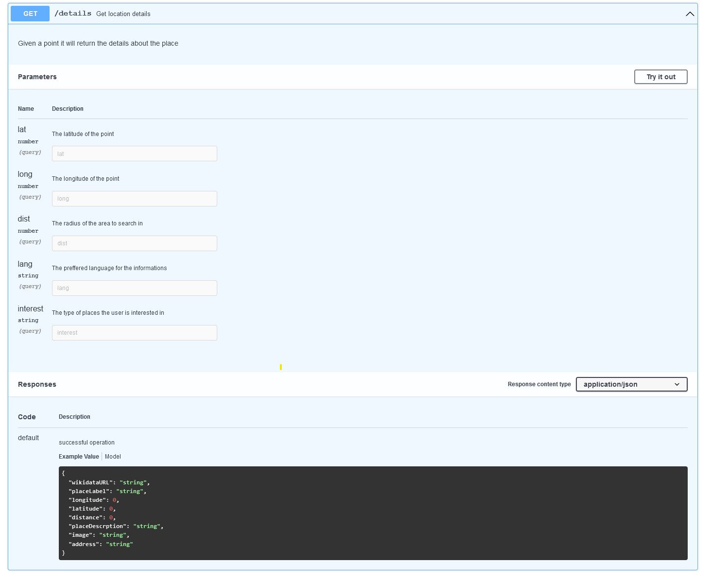

SEVIR (semantic-based virtual guide) project is a proposal of Web application that will
allow clients to use the power of the cartographic Web services in order to augment the
information about one or more points of interest according to user preferences and
the current context.
2. Requirements
Use well-known cartographic Web service(s), in conjunction to OpenStreetMap and LinkedGeoData,
in order to augment the information about one or more points (places) of interest according to
user preferences (e.g., significant routes, businesses, touristic attractions, nearby locations)
and context: a specific location, date/time, device, current activity, mood, health status,...
"Smart" suggestions like orientation clues, map annotations, plus external knowledge could be
provided by DBpedia and/or Wikidata. Take into consideration the use of proper conceptual models
regarding the map-related information, car GPS integration, user needs (example: a family having
small children wants a smooth itinerary including many stops versus a group of youngsters focused
on fun + (pleasant) surprises), internationalization (i.e., support for automated translation)
and localization, plus the integration with popular social Web applications – supporting actions
like sharing and/or accessing photos, videos, reviews, advices, etc. All data managed by the
developed application will be accessed via a SPARQL endpoint. Additionally, various travel-related
APIs could be used. Bonus: offer also a conversational Web interface – for instance, integrate
a chatter bot.
3. Use cases
Fig. 1: Usecase diagram
The application might be used by a normal user with the fallowing use case scenarios:
Register as a new user of the application.
Authenticate using a username and a password. This action requires registration.
View a map with multiple interest points based on the real time location of
the user. This action requires authentication.
Add/update the user's preferences. This action requires authentication.
Set a actual context: mood, health status, etc. This action requires authentication.
Search for suggested places to visit, orientation clues, possible itinerary to o specific
destination based on the actual parameters set from context and also on the user's preferences.
This action requires authentication.
Share or access photos, videos, reviews, advices on/from social media. This action requires
authentication.
4. Architecture
Fig. 2: Overall of the SEVIR application architecture
SEVIR will be implemented as a Angular Web Application that will call 4 principal
services implemented using Java:
Accounts service: it will be used as a the users management system.
Preferences service: it will be responsible for updating and retrieving the information about
the user preferences.
Suggestions service: it will be responsible for generating suggestions based on user
preferences and context.
Social-Media service: it will be used for sharing/accessing photos, videos, reviews, advices, etc.
The storage for both the Accounts and Preferences services will be provided by a relational database
(MySQL) and the operation on it will be done via a SPARQL request.
For extra information regarding a place we will also use data from DBpedia and Wikidata.
Moreover, there will be used 2 external APIs: OpenStreetMap and LinkedGeoData.
OpenStreetMap will be used by the Angular application and the Suggestions service in order
to show the map based on the current location, to show the suggestions routes and places.
The suggestions will be generated using information about the users.
LinkedGeoData will be used by the Suggestions service in order to find in a accurate method
places to visit, orientation clues, possible itinerary to o specific destination based on the
actual parameters set from context and also on the user's preferences.
5. APIs
For each service there will be implemented different requests based on the needs of implementation:
Fig. 3: APIs specification
As an example, for the suggestions service the GET request will be implemented as fallows:

Fig. 4: Example of GET request
6. External APIs
OpenStreetMap is a project that creates and distributes free geographic data. OpenStreetMap represents
physical features on the ground (e.g., roads or buildings) using tags attached to its basic data
structures (its nodes, ways, and relations). Each tag describes a geographic attribute of the feature
being shown by that specific node, way or relation.
OpenStreetMap's free tagging system allows the map to include an unlimited number of attributes describing each
feature.
LinkedGeoData is an effort to add a spatial dimension to the Web of Data / Semantic Web. LinkedGeoData uses
the information collected by the OpenStreetMap project and makes it available as an RDF knowledge base according
to the Linked Data principles. It interlinks this data with other knowledge bases in the Linking Open Data
initiative.